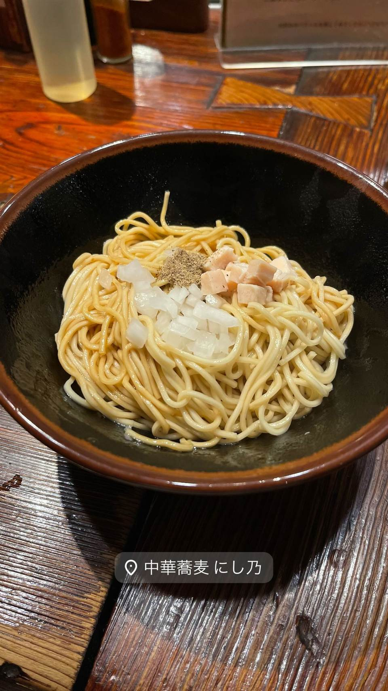

★ また行きたいまぜそば・油そばで1位
中華蕎麦にし乃
メニューは2種類のみ、生姜香る肉厚ワンタン入りの中華そば
中華蕎麦 にし乃
上北沢の名店「らぁめん小池」の2号店として2018年に本郷三丁目の路地裏で開業。煮干し・鶏・豚・貝を合わせた優しい味わいのスープと、生姜の効いたジューシーな肉ワンタンが評判で、食べログ百名店・ミシュランビブグルマンにも選ばれている。

TRIVIA
豆知識
- メニューは中華そばと山椒そばの2種類のみに絞られている
- 店名「にし乃」は店主が好きな乃木坂46のメンバー名に由来する
- 姉妹店「らぁめん小池」「キング製麺」も共に評価が高い
REVIEWS
世間の評判
97.9ラーメンDB3.79食べログ
山椒そばの個性と淡麗系の実力
- 山椒の香りと痺れが効いた山椒そばを評価する声が多い
- 動物系と魚介系の旨味を感じる淡麗系スープの完成度を評価する人が多い
- 昆布水つけ麺は決まった食べ方の手順があり楽しめるという声もある
ラーメンデータベース 口コミ291件・総合62位・最新 2026-09
| 創業 | 2018年2月17日開業 |
|---|---|
| 系譜 | 上北沢の人気ラーメン店「らぁめん小池」の2号店（小池系列）。店主は日本料理の修業を経て「らぁめん小池」を開業し、その後「にし乃」を出店した。 |
| 看板 | 中華そば、山椒そば（メニューはこの2種類のみ） |
| こだわり | 煮干し・鶏・豚・貝を合わせた優しい出汁のスープ。生姜を効かせた肉厚でジューシーな自家製肉ワンタンが名物。 |
| 掲載・評価 | 食べログラーメン百名店、ミシュランガイド東京ビブグルマン掲載 |
| どこから | 都心 |
| 行くなら | 行列 |
| 営業時間 | 月〜日 11:00-15:00、18:00-21:00 |
| 予算 | 昼 ¥1,000～¥1,999 夜 ¥1,000～¥1,999 |
| 場所 | 本郷三丁目 東京都文京区本郷3-30-7 熊野ビルB101 |
| メモ | 現金のみの食券制。昼は行列ができる人気店。 |
食べたもの：中華そば / 和え麺
地図で見る店の情報ラーメンDBX（その日の営業）Instagram
NEARBY
近い店・同じ系統の店
-
 ★
まぜそば・油そば 亀戸駅
しののめヌードル
淡海地鶏と干し椎茸出汁、手もみ自家製麺の油そば
昼 ¥1,000～¥1,999 夜 ¥1,000～¥1,999
★
まぜそば・油そば 亀戸駅
しののめヌードル
淡海地鶏と干し椎茸出汁、手もみ自家製麺の油そば
昼 ¥1,000～¥1,999 夜 ¥1,000～¥1,999
-
 ★
まぜそば・油そば 亀戸
DURAMENTEI（ドゥラメンテイ）
白醤油と黒醤油、選べる2種スープと自家製ワンタン
昼 ¥1,000～¥1,999 夜 ¥1,000～¥1,999
★
まぜそば・油そば 亀戸
DURAMENTEI（ドゥラメンテイ）
白醤油と黒醤油、選べる2種スープと自家製ワンタン
昼 ¥1,000～¥1,999 夜 ¥1,000～¥1,999
-
 ★
まぜそば・油そば 稲荷町
さんじ
豪州でお好み焼き店を営んだ店主の自家焙煎煮干しラーメン
昼 ～¥999 夜 ¥1,000～¥1,999
★
まぜそば・油そば 稲荷町
さんじ
豪州でお好み焼き店を営んだ店主の自家焙煎煮干しラーメン
昼 ～¥999 夜 ¥1,000～¥1,999
-
 ★
まぜそば・油そば 東中神
自家製麺 まさき
水の綺麗な昭島を選んで出した二郎系の汁なしまぜそば
昼 ～¥999 夜 ～¥999
★
まぜそば・油そば 東中神
自家製麺 まさき
水の綺麗な昭島を選んで出した二郎系の汁なしまぜそば
昼 ～¥999 夜 ～¥999
-
 ★
まぜそば・油そば 武蔵境駅
珍々亭（珍珍亭）
1957年創業で油そば発祥の一店とされ、先代考案の拌麺ヒントのレシピが残る
昼 ～¥999 夜 ～¥999
★
まぜそば・油そば 武蔵境駅
珍々亭（珍珍亭）
1957年創業で油そば発祥の一店とされ、先代考案の拌麺ヒントのレシピが残る
昼 ～¥999 夜 ～¥999
-
 ★
まぜそば・油そば 旗の台駅
麺家 ぶらいとん
「無頼豚」の当て字を持つ、行列必至の油そばが看板
昼 ¥1,000～¥1,999 夜 ¥1,000～¥1,999
★
まぜそば・油そば 旗の台駅
麺家 ぶらいとん
「無頼豚」の当て字を持つ、行列必至の油そばが看板
昼 ¥1,000～¥1,999 夜 ¥1,000～¥1,999